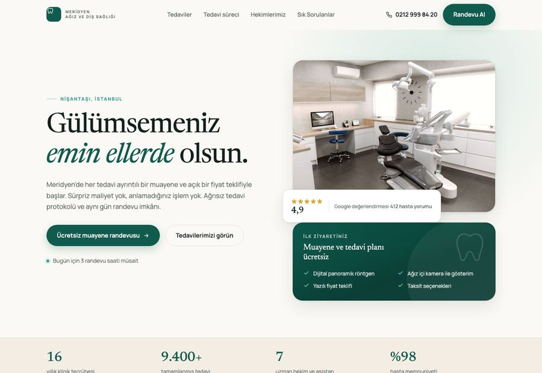
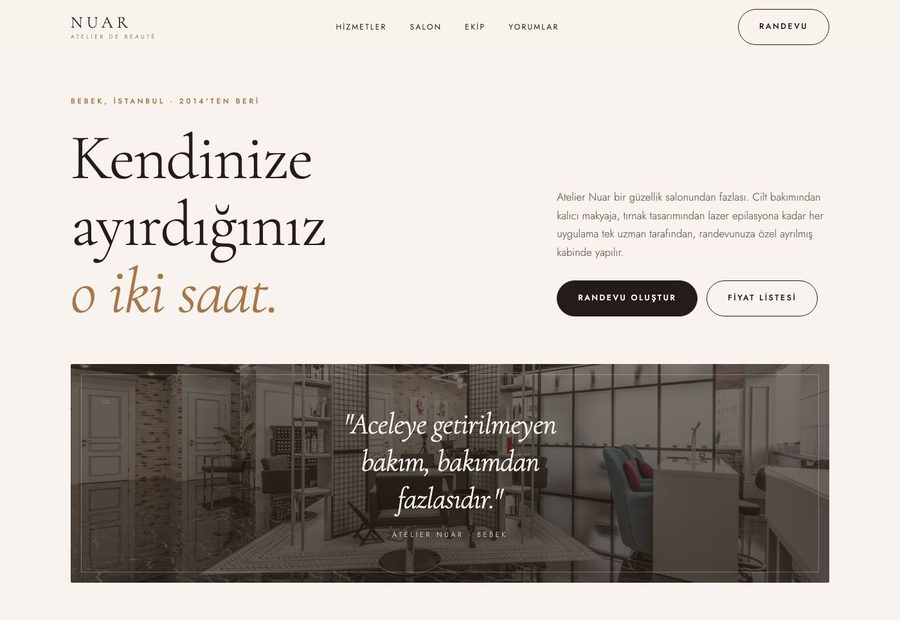
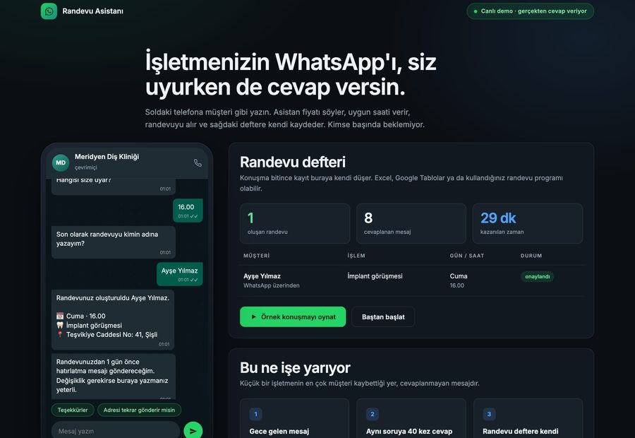

Siteniz üç günde yayında.
İşletmeler için iki iş yapıyoruz: telefonda rahat kullanılan internet siteleri kuruyor, WhatsApp hattınıza gelen soruları ve randevu taleplerini karşılayan bir yapay zeka asistanı hazırlıyoruz. İkisini birlikte ya da ayrı ayrı alabilirsiniz. Aşağıdaki örnekler çalışır durumda; açıp deneyin, sonra işletmenize neyin uyduğuna birlikte karar verelim.
Anlatmıyoruz, açıp gösteriyoruz.
Aşağıdaki referans sitelerini biz hazırladık. Üçü de çalışır durumda, açıp deneyebilirsiniz. Beğendiğiniz bir yaklaşım varsa söyleyin, sizin işiniz için aynısını kuralım.

Diş kliniği
Tedavi kartları, hekim tanıtımı, randevu formu, KVKK aydınlatma metni. Sağlık mevzuatına göre kurulmuş bir yapı.
Aç
Güzellik salonu
Açık fiyat listesi, ekip tanıtımı, randevu formu. Salonun kendi görsel diliyle kurulmuş bir tasarım, hazır şablon değil.
Aç
WhatsApp asistanı
Telefona müşteri gibi yazın. Fiyatı söyler, uygun saati verir, randevuyu alır ve deftere kendi yazar. Bunu şimdi deneyin.
Deneİki iş. Ayrı ayrı da alınır, birlikte de.
İnternet siteniz
Ziyaretçilerin çoğu telefondan geliyor. Site önce telefonda kurulur, bilgisayar sonra gelir. Tersi değil.
- Tanıtım, hizmetler, ekip, sık sorulanlar, iletişim
- Çalışan randevu ve iletişim formu
- WhatsApp düğmesi, tıklanınca arayan telefon
- KVKK aydınlatma metni ve onay kutusu, ilk günden kurulu
- Google'da bulunabilmek için gereken ayarlar
- Sosyal medyada paylaşınca çıkan önizleme görseli
WhatsApp randevu asistanı
Mesajların önemli kısmı mesai dışında geliyor. Sabah cevap veren işletme o müşteriyi çoktan kaybetmiş oluyor.
- Kendi WhatsApp işletme hattınıza bağlanır
- Fiyat, adres, çalışma saati sorularına 7/24 cevap
- Randevuyu alır, gün ve saati konuşarak belirler
- Kaydı Excel veya Google Tablolar'a kendi yazar
- Cevaplar sizin fiyat listenize göre yazılır
- Bilmediği soruyu size iletir, tahmin yürütmez
Rakamları saklamıyoruz.
Aşağıda her paketin kapsamını, süresini ve ilk yıl toplam maliyetini bulacaksınız. Paket fiyatlarımız belirtilen kapsam için sabittir; aynı işi yaptıran iki müşteriye farklı fiyat vermiyoruz.
Vitrin
Tek sayfalık tanıtım sitesi. Ziyaretçi tek ekranda kaydırarak işletmenizi tanır, sonunda size ulaşır.
- Sayfa
- Tek sayfa, bölümler hâlinde
- Kimler için
- Hizmetini birkaç başlıkta anlatabilen işletmeler: klinik, salon, kafe, atölye
- Süre
- 3 iş günü, içerik teslimi sonrası
Kurumsal
Çok sayfalı site. Her hizmetiniz kendi sayfasında anlatılır, içeriği sonradan kendiniz güncelleyebilirsiniz.
- Sayfa
- 4 ila 6 sayfa
- Kimler için
- Birden çok hizmeti ayrı ayrı anlatması gereken, düzenli içerik üretmek isteyen işletmeler
- Süre
- 7 iş günü, içerik teslimi sonrası
Yapay zeka otomasyon
Kendi WhatsApp işletme hattınıza bağlanan randevu asistanı. Siz uyurken de cevap verir, randevuyu alır, deftere kendi yazar.
- Nerede çalışır
- Sizin WhatsApp işletme hattınızda, müşteri hiçbir şey indirmez
- Kimler için
- Mesai dışında mesaj alan, randevuyla çalışan işletmeler
- Süre
- 5 iş günü, kurulum ve deneme dahil
Site bakımı
Sitenizin ayakta ve güvende kalması için aylık teknik bakım. Kurulumdan sonra başlar.
- Kimler için
- Sitesi olan herkes. İlk 12 ay zorunludur
- Süre
- Aylık, teslim tarihinde başlar
- Sonrası
- 12 ay sonunda 30 gün önceden haber vererek bırakabilirsiniz
Otomasyon bakımı
Asistanın çalışır kalması, cevaplarının güncellenmesi ve arıza sorumluluğu.
- Kimler için
- Yapay zeka otomasyon hizmeti alan işletmeler
- Süre
- Aylık, kurulum tarihinde başlar
- Kapsam dışı
- Yapay zeka kullanım ve WhatsApp mesaj ücretleri size aittir
Peşinat, kapora ya da ön ödeme istemiyoruz. Sözleşmeyi imzalarsınız, siteniz kurulur ve önizlemede tam haliyle karşınıza çıkar. Beğenirseniz ödersiniz; site ancak ondan sonra yayına girer ve şifreler size geçer. Yeni bir markayız; güvenmenizi istemek yerine riski üstlenmeyi tercih ediyoruz.
Baştan sona ne oluyor.
Görüşme
Yarım saat. İşletmenizi, müşterilerinizin en çok sorduğu şeyleri konuşuruz. Sonunda hangi paketin uyduğu netleşir.
Sözleşme
Sözleşme imzalanır. Bu aşamada hiçbir ödeme yapmazsınız. Aynı gün içerik listesi elinize geçer.
İçerik teslimi
Süreyi belirleyen adım budur. Logo, fotoğraflar, hizmet listesi ve iletişim bilgileri tek klasörde bize ulaşır. Teslim tarihi bu günden sayılır.
Kurulum
Site kurulur ve size özel bir önizleme adresinde açılır. Telefonunuzdan girip gerçek halini görürsünüz.
İki tur düzeltme
İki tur düzeltme dahildir. Her turdaki geri bildirimlerinizi tek mesajda toplayıp birlikte uygularız; böylece iki tur da verimli geçer.
Önizleme ve ödeme
Siteyi bitmiş haliyle önizlemede gezersiniz. Beğendiğinizi yazılı olarak bildirirsiniz, fatura kesilir, ödemeyi o zaman yaparsınız.
Yayın ve teslim
Site kendi alan adınızda yayına girer. Alan adı ve barındırma şifreleri size teslim edilir, bakım aynı gün başlar.
Bir bakalım, size ne uyuyor.
İşletmenizin adını yazın, size sektörünüze uygun çalışan bir örnek hazırlayıp gönderelim. Örneği inceleyin; uygun bulursanız sonraki adımı birlikte planlayalım.
WhatsApp Doğrudan yazın → Telefon 0___ ___ __ __ E-posta merhaba@sarmaldijital.com Instagram @sarmaldjtlKişisel verileriniz
KVKK Aydınlatma Metni
Veri sorumlusu. Ortak Burada Teknoloji Pazarlama Ltd. Şti. (ticari faaliyet adı: Sarmal Dijital). İletişim: merhaba@sarmaldijital.com
Hangi veriler işlenir. Bu sitedeki iletişim formu üzerinden işletme adı, ad soyad, telefon numarası, ilgilendiğiniz hizmet ve kendi isteğinizle yazdığınız mesaj. Özel nitelikli kişisel veri toplamıyoruz; lütfen forma sağlık, inanç veya benzeri hassas bilgiler yazmayın.
İşleme amacı. Talebinizin değerlendirilmesi, size örnek çalışma hazırlanması ve teklif sunulması. Başka bir amaçla kullanılmaz, reklam listesine eklenmezsiniz.
Hukuki sebep. Talebiniz üzerine yürütülen ön görüşme ve meşru menfaat.
Toplama yöntemi. Bu sitedeki form aracılığıyla, elektronik ortamda. Form gönderiminde bilgiler WhatsApp üzerinden iletilir; bu aşamada WhatsApp'ın kendi gizlilik koşulları da geçerli olur.
Aktarım. Bilgileriniz üçüncü kişilere satılmaz, kiralanmaz, pazarlama amacıyla paylaşılmaz. Yalnızca yasal olarak bilgi talep etmeye yetkili kamu kurumlarına, mevzuatın zorunlu kıldığı hâllerde aktarılabilir.
Saklama süresi. Sonuçlanmayan talepler 12 ay içinde silinir. Sözleşme kurulması hâlinde ilgili kayıtlar yasal saklama süreleri boyunca tutulur.
Haklarınız. KVKK'nın 11. maddesi uyarınca verilerinizin işlenip işlenmediğini öğrenme, bilgi talep etme, düzeltilmesini veya silinmesini isteme ve işlemeye itiraz etme haklarına sahipsiniz. Taleplerinizi yukarıdaki e-posta adresinden iletebilirsiniz.
Gizlilik Politikası
Bu sitede paylaştığınız bilgiler yalnızca sizinle iletişim kurmak ve talebinizi değerlendirmek için kullanılır. Reklam ve pazarlama amacıyla kullanılmaz, satılmaz, kiralanmaz.
Sitede takip veya profilleme aracı çalıştırmıyoruz. Yazı tipleri Google Fonts üzerinden yüklenmektedir; bu sırada tarayıcınız Google'ın sunucusuna istek gönderir.
Örnek çalışmalara (referans sayfalarına) tıkladığınızda ayrı sayfalara geçersiniz. O sayfalardaki formlar tanıtım amaçlıdır, girdiğiniz bilgiler hiçbir yere gönderilmez.
Çerez Politikası
Bu sitede reklam veya takip çerezi kullanılmaz. Sayfanın çalışması için zorunlu olanlar dışında çerez yerleştirmiyoruz, ziyaretinizi kaydetmiyoruz.
Tarayıcı ayarlarınızdan çerezleri istediğiniz zaman silebilir veya engelleyebilirsiniz.